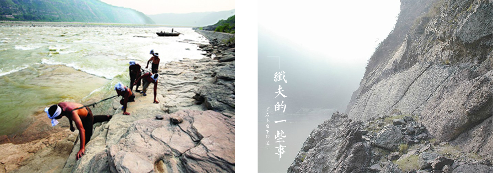

The so-called "tracker" refers to those who pull the line
At that time, the wujiang river was in a great deal of power, the coal, timber, agricultural products and household products were shipped in and out of the boat, and the cilius played a key role in that time. They limped along and limped forward with a stiff rope. There are a lot of pull against time is don't wear clothes, spring, summer and early autumn warm season is more than naked, even in the face of big girl is also poised.
Why don't they wear clothes? The tracker is a family of poor people, such as wearing clothes, sweat dipped in salt and the wear of a fiber rope. In the case of fiber, the water should be launched frequently. Prevention is the most important thing, if wearing clothes, shore for a while, a moment in the water, dry the wet clothes in the body, wet dry, not only convenient, and easy to diseases such as rheumatism, arthritis, so as not to wear clothes.
In addition to fiber, the ciliator would call a hoarse boat operator. "Oh, hiyo, ho, ho, drag, drag, drag..." Every time a water boat or a boat is in danger of a dangerous water, it is a good idea to make a sound, sound and sound. Severe winter, chilly season, once the ship ran aground, when you look at the shore one tracker are arranged neatly jiang rope, a world-shaking Shouting... The river wind was swathed in ice and snow, and it was impossible for the rest of us to look like it, and the tracker took it for granted.
The ciliates are the work of the ciliates on the river side of the river, where they work long years and leave marks on the hard rocks
There are several main types of cilites on the Yangtze river:
1 The small print of the foot, which leaves the impression on the track.。
2 A stone that marks the marks of a small string while pulling a boat。
3 A stone of a ship's imprint, a stone of a ship。
When summer river rose water, a boat parked in rapids rapids, a team of pull drag on shore, balance of power to pull even too tired to vomiting blood, ships will turn. Once a boat is turned off, the tracker is often not dead or injured. The ship and shore were to be shouted, complained, shouted, and the boat was "safe," and the tracker called "dodging". To avoid is to avoid the water tendon and reduce the momentum. You know, this kind of scolding is not avoided by friends, family, brothers and father。All the time the boat pulled out of the rapids, and all the levees took a breath, lying on the ground and gasping for breath. Things like this, they don't say thank you, they often do it for me, I help you, I have become the consensus.
There are many taboos on the boat, "the man on the back of the dragon". On board, the bowl cannot be called "bowl", "lotus". The lotus is the mascot, the bowl has the meaning "full of water", the boat people taboo this. The chopsticks are called "howrods", and the rod is a pole, which is a pole for the boat. The person surnamed Chen has to call "old Yin" because "Chen" harmonic "sink", that still be good! So avoid it.
